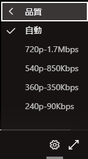

こんにちは。いつも Microsoft Teams をご利用いただきありがとうございます。Live Events Assistance Program (LEAP) 担当の吉井です。
今回は、ライブ イベントの本番でトラブルが発生したときに、まず確認・実施する作業をご案内いたします。
時間が限られているライブ イベントでトラブルが発生すると、かなり焦ってしまいますし、様々なことを見落としてしまいがちです。
そういう時こそ、一度落ち着いて、1 つ 1 つ情報を確認していくことが重要です。
ライブ イベントの問題の場合、開催者の操作で確認可能なものと参加者側での確認が必要なものの 2 種類があります。
よくある問題ごとに、確認事項・対処方法をまとめたので、参考にしてください。
参加者側で確認が必要なものについては、簡単なものが多く、事前に参加者に周知しておくことをおすすめしています。
A. 開催者側で確認ができること
a. 音が配信されない場合
音声および音が配信されない場合には、配信画面選択時に “コンピューターの サウンドを含める” にチェックが入っていない状態だった可能性があります。
その場合には、一度画面の配信を中断し、改めて “コンピューターの サウンドを含める” にチェックが入った状態であることを確認のうえ、配信画面をキューに送信しなおしてください。
<参考情報>
Teams の会議またはライブイベントでコンピューターからサウンドを共有する
・コンピューターのサウンドを含める
b. 配信画面では音が聞こえているが、参加者側の画面で音が聞こえない場合
開催者にて操作する画面上で音が聞こえていても、参加者側の画面で音が聞こえない場合があります。
その場合には、正常に配信が行えていない可能性があるので、一度画面の配信を停止し、改めて画面を選択して、配信画面をキューに送信しなおしてください。
また、それでも改善しない場合には、開催者の端末を変更する、別の開催者がキューを送信する、といった方法をお試しください。
c. 映像が止まってしまう場合
開催者にて操作する画面上の映像自体が止まってしまう場合には、開催者側の端末に問題がある可能性が最も高いです。
その場合には以下の対処をお試しください。
- 一度画面の配信を停止して、改めて画面を選択し、配信画面をキューに送信しなおす
- 配信している端末を交換する
- 配信操作をするユーザーを別のユーザーにする（可能であれば別端末から操作）
- Teams 以外に起動しているアプリケーションを終了する
- 使用しているネットワークを切り替える（可能であれば有線にする）
- 映像に外部のデバイスを使用している場合には、外部のデバイスとの接続を切断してつなぎ直す。
d. それ以外の問題の場合
上記の a - c の問題以外の問題が起こった場合、a - c の対処で問題が解消しない場合には、以下の対処をお試しください。
- 配信用の端末のキャッシュ削除 (“C. キャッシュ削除の方法” 参照)
- ライブ イベントをバックアップ用のライブ イベントに切り替える
B. 参加者側で確認ができること
a. 映像が乱れる・止まる場合
視聴環境のスペックや負荷状況によって、ライブ イベントの映像が重く、映像が乱れる、止まってしまう状況が考えられます。
その場合には、参加者側で視聴時のライブ イベントの品質を下げて問題が解消するか確認してください。
- ライブ イベント視聴画面の右下の歯車アイコンをクリックし、[品質] 項目をクリックします。
- 通常は [自動] になっていますが、”360p-350Kbps” または “240p-90Kbps” のどちらを選択し、ライブ イベントの配信の品質を下げます。

b. それ以外の問題の場合
“a. 映像が乱れる・止まる場合” の解消策で問題が解決しない、それ以外の問題が起こっている場合には、以下の対処をお試しください。
- ブラウザからアクセスする
- Teams 以外に起動しているアプリを終了する
- キャッシュ削除 (“c. キャッシュ削除の方法” 参照)
C. キャッシュ削除の方法
- Microsoft Teams を終了します。
- Windows キーを押したまま、[R] キーを押します。
- [ファイル名を指定して実行] のダイアログに、[名前] に “%AppData%\Microsoft” を入力し、[OK] をクリックします。
- [Teams] フォルダーを削除します。 ※ 削除できない場合は、Microsoft Teams が起動している可能性があります。
- Microsoft Teams を起動し、事象が改善されるかを確認します。
イベント本番でのトラブルはどうしても焦りが出てしまい重要な確認が漏れてしまいがちです。
そういう時こそ落ち着いて、この記事を参考にトラブルに対処いただければと思います。
ライブ イベントを計画の際には、お気軽に Live Events Assistance Program までご連絡ください。
※本情報の内容（添付文書、リンク先などを含む）は、作成日時点でのものであり、予告なく変更される場合があります。